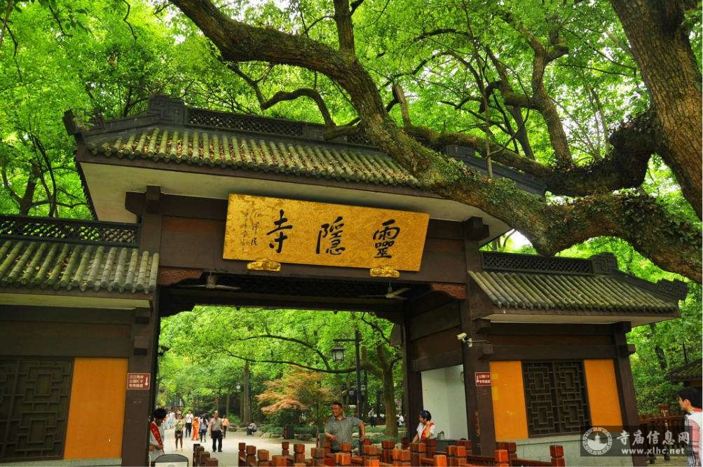
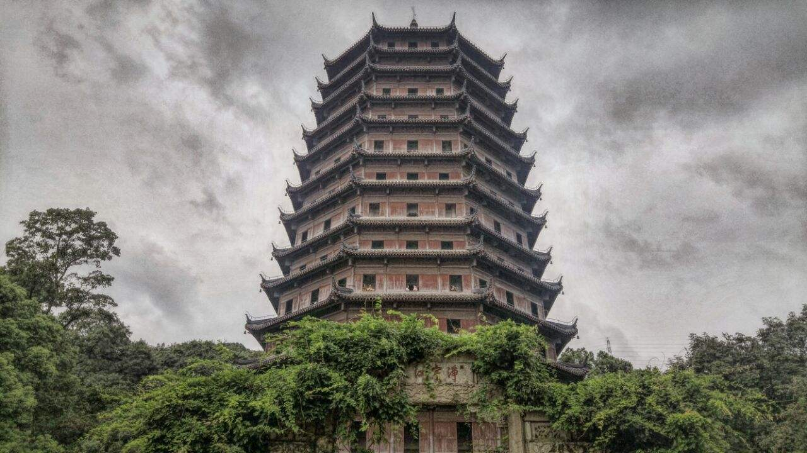
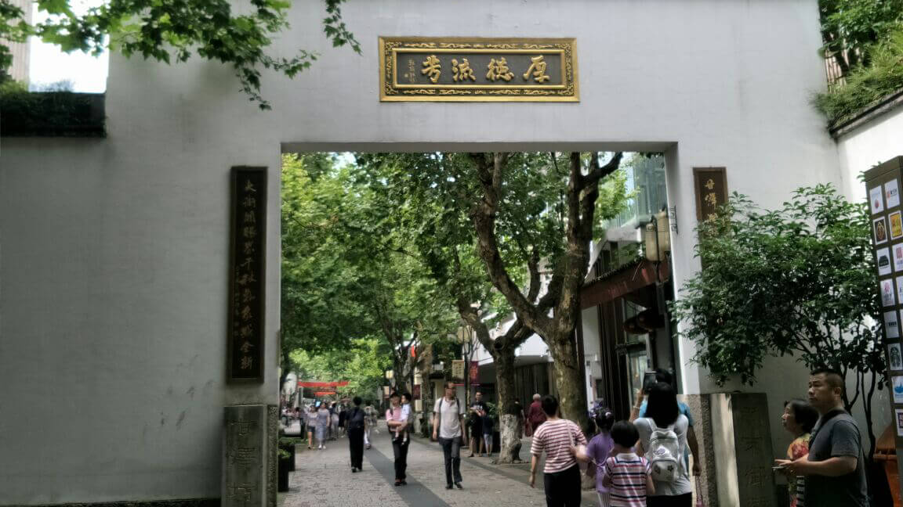

Lingyin Temple, founded in 326 AD during the Eastern Jin Dynasty, is one of China’s oldest and most famous Buddhist temples. Nestled at the foot of North Peak Mountain, it’s surrounded by bamboo forests and stone carvings of Buddha (some dating back to the Tang Dynasty), giving it a serene, sacred atmosphere.The temple complex follows traditional Buddhist architecture: a central axis with four main halls—Heavenly Kings Hall (housing a 19.6-meter-tall statue of Maitreya Buddha, carved from camphor wood), Main Hall (with a 24.8-meter-tall statue of Sakyamuni Buddha, covered in gold leaf), Medicine Buddha Hall (for praying for health), and Sutra Library (storing ancient Buddhist scriptures). Behind the temple, the "Feilai Peak" (Flying Peak) has over 300 stone carvings of Buddha and Bodhisattvas—many carved during the Five Dynasties and Song Dynasty.
Morning (7:30 AM–9 AM): Quiet, fresh air, and monks are conducting morning rituals.
Autumn (October–November): Bamboo forests around the temple turn golden, 12°C–20°C.
Lingyin Temple: 75 CNY/adult (includes entry to Feilai Peak); 37.5 CNY/students.
Incense: 5 CNY/bundle (available at the temple entrance—offer 3 sticks per person, no more).

Six Harmonies Pagoda, built in 970 AD during the Northern Song Dynasty, is a 59.89-meter-tall octagonal pagoda located on Yuelun Mountain, overlooking the Qiantang River. It was originally built to suppress the river’s floods and promote "six harmonies" (harmony of heaven, earth, and the four directions).The pagoda has 13 stories (7 visible from the outside, 6 hidden inside) with spiral staircases that lead to viewing platforms on each floor. From the top, you can see the Qiantang River flowing east, the Hangzhou skyline to the south, and West Lake in the distance (on clear days). Inside the pagoda, the walls are decorated with stone carvings of Buddha, bodhisattvas, and historical scenes from the Song Dynasty. The pagoda is also famous for its connection to the Qiantang River Tidal Bore—every autumn, people gather near the pagoda to watch the huge tidal waves roll up the river.
Autumn (September–October): Mild weather, clear views, and the Qiantang River Tidal Bore is visible.
Afternoon (2 PM–4 PM): Sunlight is soft, perfect for photos of the pagoda and river.
Six Harmonies Pagoda: 30 CNY/adult; 15 CNY/students.
Tidal Bore Museum: Free entry.

Southern Song Dynasty Royal Street is a 4.3-kilometer historic street that dates back to the Southern Song Dynasty (1127–1279), when Hangzhou was the imperial capital. The street was once the heart of the city—home to imperial palaces, government offices, and wealthy merchants’ shops. Today, it’s been restored to its former glory, with traditional Chinese buildings (wooden structures with black tiles and red pillars), stone paved roads, and shops selling traditional crafts, snacks, and tea.Walking along the street, you’ll pass historic sites like the "Former Site of Southern Song Dynasty Imperial Palace" (a ruin with stone foundations and information boards), the "Qinghefang Ancient Street" (a busy section with street food stalls and souvenir shops), and the "Huqingyutang Traditional Chinese Medicine Museum" (a 100-year-old pharmacy with exhibits of ancient herbal medicines). It’s a great place to experience Hangzhou’s imperial history and buy traditional souvenirs like silk scarves (50–200 CNY) or paper umbrellas (30–80 CNY).
Afternoon (3 PM–5 PM): Not too crowded, perfect for exploring shops and museums.
Night (7 PM–9 PM): Lanterns are lit, and street food stalls are in full swing.
Southern Song Dynasty Royal Street: Free entry.
Huqingyutang Museum: 10 CNY/adult; 5 CNY/students.
Former Site of Southern Song Dynasty Imperial Palace: Free entry.